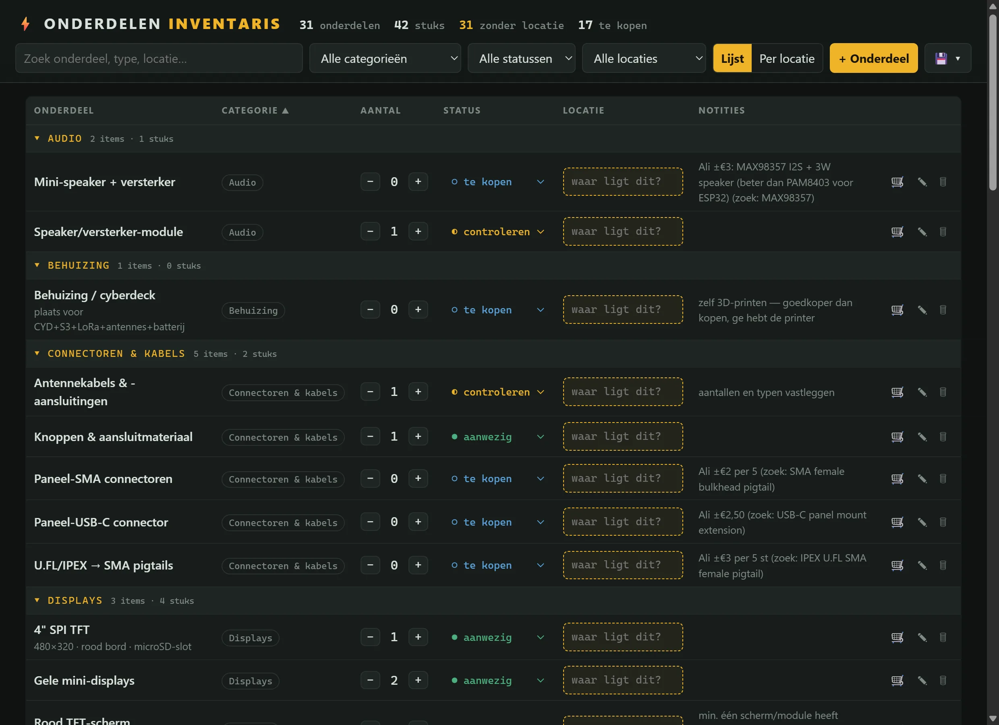
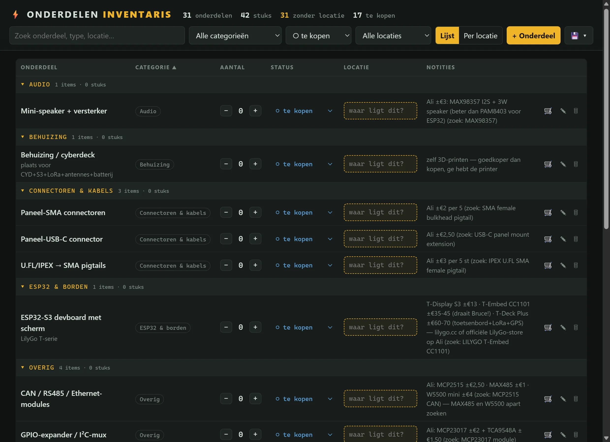

SINGLE-FILE APP · OPERATIONS · HARDWARE
Parts Inventory
My own stock management for my electronics workbench: what do I have, where is it and what do I still need to buy — built as one fast local app.
RESULT
Dozens of parts catalogued with status and location — and an automatic to-buy list with price notes and search terms per part.


01 THE PROBLEM
Electronic parts pile up faster than you think: ESP32 boards, displays, sensors, cables — spread across boxes, drawers and "somewhere safe". Just when you want to build something, you don't know what's in stock, where it is, or whether you're ordering it twice.
02 WHAT IT DOES
- Stock & status
- Every part with a quantity and a status: in stock, check or to buy. Update quantities with one click on plus or minus.
- Locations
- A location field per part ("where is this?") and a per-location overview — so the drawer chaos adds up digitally too.
- To-buy list
- One filter click turns the inventory into a shopping list, with guide prices and exact search terms per part in the notes.
- Categories & search
- Audio, displays, ESP32 & boards, connectors… everything grouped, searchable and filterable.
- Local & simple
- One HTML file, data in one JSON. Also runs as an Electron app with autosave, and exports to JSON or CSV.
03 WHAT I LEARNED
The best tool is the one you actually keep filling in. Anything that takes more effort than a sticker on a box loses — so everything revolves around one list, big buttons and autosave. Operations thinking, applied to my own workbench.
INTERESTED?
Let's talk.
Tell me what you think — or what you'd want to do with it.